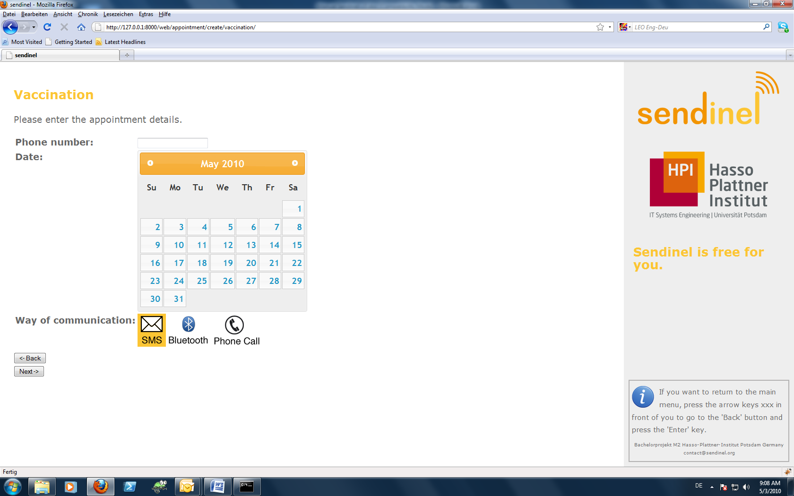
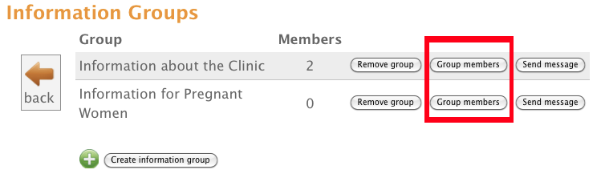

User Manual for Sendinel
Sending SMS and Phone Calls to Patientshttp://www.sendinel.org
Potsdam, May 2010
Sendinel allows Clinics to reach the patients on their cell phones. For example patients could be informed if their lab results or medicine have arrived. This saves time for the patients and improves the waiting situation in the clinic because patients only have to come if the needed medication is available at the clinic.
You should use Sendinel, when you make appointments with the patients. So when you write down the date of the next follow-up consultation or the date of the next vaccination in the patient‘s file, you should ask the patient if he or she wants to be reminded of the appointment. If so, the appointment should be entered into Sendinel by the staff.
Sendinel should also be used, when you receive lab results or when medicine arrives. You can then notify the patients who are waiting for their results or medicine of the arrival for their medicine.
You can
If you want to remind someone of the next vaccination, kindly click on the main menu on “Remind of Vaccination”. Then you will see this on your computer screen:

Please enter the phone number of the patient. Then you have to enter the date when the next appointment is going to take place. Please look if the box shows the correct month. If the month is not the right one, you can use the little arrows to the left and right of the month name to choose the next or the previous month.
Then click on the correct date. If you have chosen a date, it will be highlighted in orange.
As a last step, you have to choose the way of communication. If you want your patient to receive an SMS, kindly click on the SMS symbol. If you think, that your patient might be illiterate, choose “Phone Call”. Then the patient will be called one day before the appointment and reminded of the vaccination. The call will be done by the computer and a computer voice will speak to the patient.
Finally, click on the next button at the bottom of the screen to save the entered data.
You clicked next but still see the Appointment-screen?
Then there should be an error message. Look for a red text on the screen. It will help you to enter all information correctly. When you have followed the advice, kindly click on the next button again.
If you entered all information correctly, you will see the following screen:
You should now inform the patient that he/she will be contacted one day before the vaccination is scheduled. Then the patient will not be surprised to receive an SMS or a phone call from the clinic.
After 2 minutes or when you click on the next button, you will return to the main screen of Sendinel.
This works nearly exactly like reminders for vaccinations.
This works also very similar to reminders for vaccinations
If you want to inform more than one patient that the lab results have arrived, you may use the “Inform another patient about lab results” button on the last screen.
Then you will be able to enter another phone number and way of communication.
This feature does not yet exist. It will hopefully be available until June 2010.
You can regularly send information to a group of patients. For example you can notify all subscribers to “information for pregnant women” if there is going to be a gymnastics training for them.
You can enter the groups yourself. Every group you add can be found on the main screen.
When you want to send a message to a certain group, you have to click on “send” next to the title. So let’s assume, I want to send a message to the group named “Clinic Information”. I click on “send” next to “Clinic Information” on the main page. This leads me to a new screen:
After you have clicked on “next” you see the success message:
You have only 160 characters for your message, so that it all fits in one SMS. This message will then be sent to all subscribers to that group.
But who subscribes the patients to the groups? This must also be you, the clinic staff. So for example, if there is a pregnant woman, it might be good to ask her if she wants to be subscribed to “information for pregnant women”. Then she would receive all messages that the clinic writes on the topic, until she is unsubscribed again.
In order to register a patient, kindly click on “register” next to the name of the group. So in our example you would have to click as shown in figure 11.

Then you can enter the phone number of the patient and choose, if he/she should receive an SMS or a phone call. After that, click on “next”. If you have entered all information correctly, you should then see a successmessage. Then the patient is registered in the group “information for pregnant women”.
When you want to remove a patient from a group, you need to know the phone number that the patient was registered with. Then you have to click on “Manage Information Groups” on the main screen. You will find a list of all existing groups, with two links for each group: “Remove group” and “Group members”. Kindly click on "Group members” behind the group that you want the patient to unsubscribe of. We will use here again the example of the “information for pregnant women” group.

You then see a list of all patients who are subscribed in that information group. Choose the patient that you want to delete and follow the link “Remove Patient from Group” which is next to that patient. Confirm that you do want to delete that patient and the patient is deleted.
In order to add an information group, kindly click on “Manage Information Groups”. Once again, you will see a list of all existing information groups. Right under that list, you can find a link “create information group”. If you follow that link, you will find the screen as shown in figure13.
After having pressed on “save”, you return to the overview page of the information groups. Following the “Back to Main Menu” link which is under “Create Information Group”, you return to the main screen.
If you want to delete an information group, you have to follow the “ Manage Information Groups” link on the main page. You will then again see the list of all existing information groups. Next to each group, you will find a link called “Remove Group”. Kindly follow that link at the appropriate group and confirm your decision. Then the group is deleted. You can return to the main screen using the “Back to Main Menu” link.